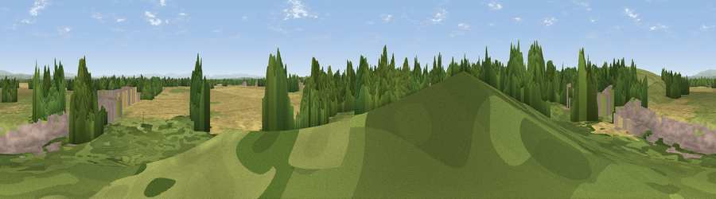

Pestfurlong Hill
#38911 in England · top 87% of its area beats it · near Fowley CommonThe view, rendered

A 360° render of this exact spot computed from the terrain model, tree cover and land cover — summer colours, afternoon light, calibrated against photographs of famous viewpoints. Real trees, hedges and buildings will differ in detail.
The panorama
Grey silhouette: terrain skyline in each direction (720 bearings, Earth curvature and refraction included). Dashed green: skyline with trees (+15 m) and buildings (+8 m) as obstacles. Blue strip: how far the ground is visible on each bearing.
Where the view opens
Wedge length = distance to the farthest visible ground on that bearing (vegetation-aware). Rings at 10, 25 and 50 km.
What fills the view
33% woodland · 27% grassland · 26% cropland · 13% built-up
Angular shares of the visible panorama (visual magnitude), not map area. Landscape diversity 0.59 (0–1 Shannon).
Key numbers
More beautiful places nearby
The staircase of upgrades: each row has a higher view potential than everything closer. Driving times are estimates from straight-line distance, calibrated against real road routing — check an actual route before setting out.
| Place | Direction | Drive | Score |
|---|---|---|---|
| Viewpoint near Culcheth | NW · 1 km | ~3 min | 63.6 |
| Viewpoint near Stretton | SW · 10 km | ~20 min | 65.2 |
| Viewpoint near Stretton | SSW · 11 km | ~20 min | 70.3 |
| Billinge Hill | WNW · 17 km | ~29 min | 73.8 |
| White Brow | N · 19 km | ~33 min | 82.9 |
| Warton Crag | NNW · 82 km | ~106 min | 83.2 |
| Viewpoint near Little Wenlock | S · 85 km | ~109 min | 84.2 |
| The Wrekin | S · 85 km | ~109 min | 85.0 |
53.43400, -2.49601 · source: osm peak · position refined by local search. Computed location — check access rights before visiting.